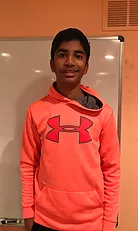
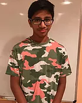
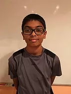
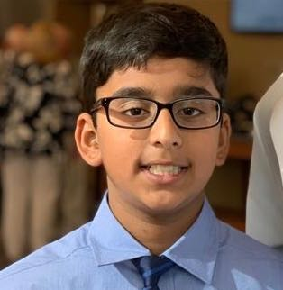
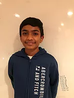
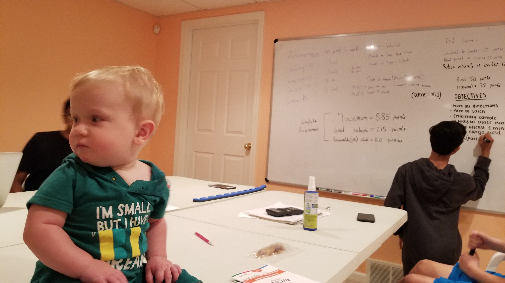

2018-19
2019-20
Mentors/Coaches
Kiran Jasti is probably one of our most engaged and hardworking coaches. He is the Team's Programming Coach, and he tirelessly spends hours learning programming and different methods and tools for programming, to help teach us. Kiran has been working with the team since the start, 4 years ago.
Steven Hatfield inspires and influences our team and its members, with his background in FIRST programs. Steve is an active mentor for the FRC 33 Killer Bees and the FRC 6117 Team Wingspan. Steve is also a school coordinator for Troy Youth Robotics (TYR) which is an organization, that coordinate activities related to FLL, FTC and FRC teams.
Bhaskar Marthi is the "founder" of the Circuit Breakers. Bhaskar has been coaching the team for 4 years now, and so he is basically a "mentor to the mentors". He shares his experiences in competition and his expertise in fundraising and business, with the coaches and mentor, as well as us team members.
Student Mentors

Srivatsav Bendi, is another experienced member. This is his 4th season on the team and besides from working on robotics during the season, he does a ton of off-season work with Nithin. Srivatsav is on the Programming team, but is actively working on honing his CAD skills. Nobody ever understands his scientific jokes or his Star Trek references.

Nithin Yeruva is an aspiring engineer. Ever since he was a kid, he has had a passion for technology and innovation. When he was recruited to our team last season as a 7th grader, Nithin’s passion for building and engineering really shined. Nithin hopes to join Team 226 Hammerheads when he is in high school. Nithin wants to try to make sure every kid in the world has the experience to participate in STEM learning experiences. If that doesn’t already sound like a lot, Nithin is also in charge of the team's social media presence. In his free time, he watches Formula 1 and the World Endurance Championship and he learns more about aerodynamics and downforce from a racing point of view and an everyday situation.
Students

Nainika Jasti is new to the team and in 6th grade. Her main focus is programming on our teams robot.
Chetana Gopu is new to the team and in 6th grade. Her main focus is building our teams robot.
Nicholas Carranza is new to the team and in 8th grade. His main focus is building our teams robot.
Isaac Hatfield has been with the team for three years. Isaac is really interested in the field of doing websites, gaming, and code, and knows all about the latest PC parts. Isaac has a lot of roles on the team. He works on the team website and social media regularly. On competition days, Isaac helps the scouting team but his main job is as a videographer. He films videos of our team’s matches so that the team can assess mistakes/ and or judging errors.
Aubrianna Cox is a 6th grade member of the FTC 11717 Circuit Breakers, Her main focus is build

Harish is in 7th grade this season. Harish along with contributing to our robotics team, is involved in Tae-Kwan-Do, Soccer, and Flag Football.
Alexander Lee is new to the team and in 6th grade. His main focus is building our teams robot with programming on the side. He always brings snacks to share with his friends at meetings.

Sohan A. is a new member of FTC 11717 Circuit Breakers robotics team. He is in 7th grade and is interested in joining programming where he is working with Java for our robot, and he also is joining the business team where he hopes to improve the team business-wise. He is also a creative person and will help with the robot a lot. He also has lots of skills that will help him in robotics.
Lily W. is a new member of the circuit breakers. She is in seventh grade at baker middle school. She has been focusing on doing business, and designing in robotics. She enjoys reading, and writing stories. She is in advanced math and has enjoyed building things since she was little, and loves legos. Lily enjoys giving people advice and is known to be a creative person who thinks outside the box.

Nirav is a 8th grader that was recently recruited to our team; he has joined the Engineering team and plays a crucial role as a scouter involved in both pre-scouting and match scouting. Nirav likes playing sports like soccer and basketball, as well as tennis. He hopes to continue doing robotics through 8th grader and maybe in high school.
Rohan is a 8th grader that was recently recruited to our team; he has joined the programming team due to his previous experience in Java programming. He is also our team’s scouting lead. Rohan likes to solve math equations, and is actively involved in Mathcounts and Debate Club.
Sahej Dhaliwal is an 8th grader on our team who focuses mainly on build and secondly on business.
Baby's in robotics?
